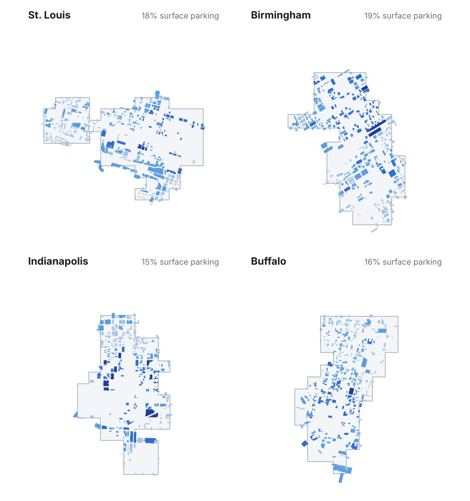

Land useAI · U-Net50 cities
Downtown Parking Footprint
How much downtown land do U.S. cities give to surface parking, and which lots could be redeveloped? One consistent downtown boundary for 50 cities, a four-part lot screen, and a model that finds lots missing from OpenStreetMap.
50downtowns measured
13,346surface lots mapped
5,407acres of parking
983unmapped lots proposed by AI